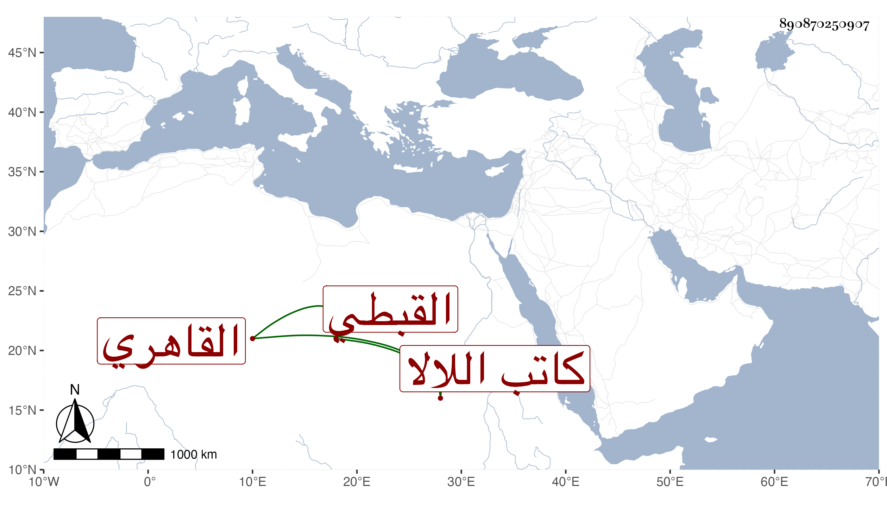

0902Sakhawi.DawLamic.ITO20230111-ara1.EIS1600.890870250907
Biography ID: 890870250907
854
نصر الله الشمس أبو المنصور القبطي القاهري كاتب اللالا ويعرف بكنيته وبابن كاتب الورشة . استقر في نظر الإسطبل في ربيع الأول سنة أربع وأربعين بعد صرف الزين الأشقر الذي صار في الأستادارية بعد لما صار ، ثم صرف في الشهر بعده بعد استيفاء القدر الذي التزم به وهو سبعمائة دينار بالتاج بن القلاقسي وكذا كان باسمه مباشرة البيبرسية ثم أملق جدا ورغب عنها وصار في حيز المهملين . مات بعد الخمسين أو قريب ذلك ورأيت من قال أن ولايته لنظر الإسطبل بعد التاج بن القلاقسي فالله أعلم .
